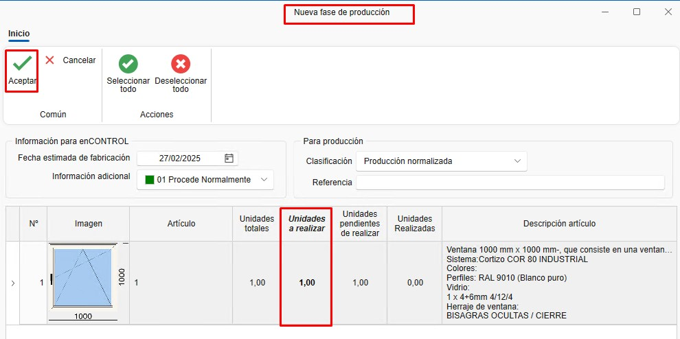
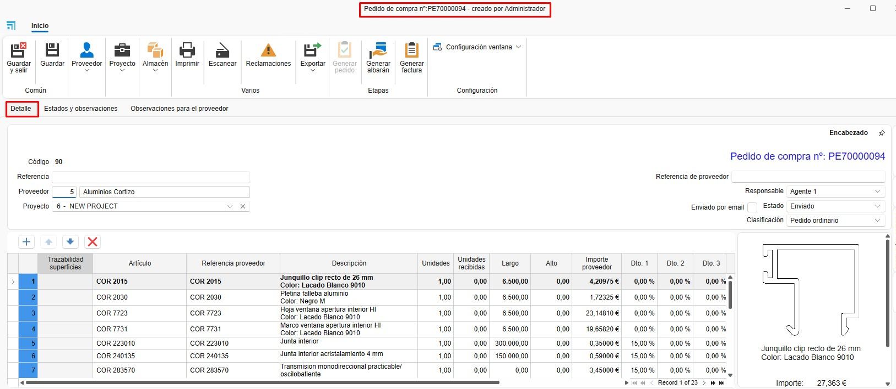

1. Ventas y Compras
1. Introducción
Este manual está diseñado para guiar a los usuarios en el uso del sistema de ventas y compras de ENBLAU. Basado en la formación proporcionada, cubre los procesos clave, desde la creación de proyectos hasta la gestión de pedidos, compras y producción.
2. Proceso
Una vez dentro, verás dos secciones principales:
2.1. Ventas
- Documentos de venta: Gestión y listado de presupuestos, pedidos, albaranes y facturas. Creación de proyectos y clientes.

2.2. Compras
- Documentos de compra: Gestión y listado de pedidos de compra y recepción de materiales. Creación de proveedores.

Nota: Para crear documentos de venta y compra, es importante tener creados proyectos, clientes y proveedores. Para más información, sigue este enlace: 4. Proyecto, cliente y proveedores.
3. Ventas
En el apartado de Ventas, encontrarás Proyectos, Documentos de venta y Clientes.
3.1. Documentos de venta
- Al entrar en Documentos de venta, se abrirá un listado de todos los documentos relacionados con ventas.

3.1.1. Tipos de documentos
- Para crear un nuevo documento, haz clic en Nuevo desde la cinta superior.

- Se abrirá una ventana Nuevo documento de venta.

- Desde aquí, podrás crear diferentes tipos de documentos de venta, como Presupuesto, Pedido, Albarán o Factura.

- Al seleccionar el tipo de documento, algunos campos se rellenarán automáticamente (Comercial, Responsable, Numeración, etc.). Estos campos son editables.

- Otros campos, como Proyecto y Cliente, pueden configurarse para rellenarse automáticamente según el proyecto.

- En la cinta superior, puedes cambiar el cliente o añadir un nuevo cliente o proyecto.

3.2. Presupuesto
- Al crear un nuevo presupuesto, se abrirá una ventana con el número del presupuesto de venta.

3.2.1. Datos del documento
- En este apartado, se pueden ver y modificar algunos campos del presupuesto.

3.2.2. Detalle
- Aquí se añaden las posiciones para la versión del presupuesto.

- Puedes añadir una nueva posición vacía o desde Logikal (asegúrate de estar conectado a fábrica).

- Al añadir una posición desde Logikal, se abrirá la ventana de configuración de Logikal Tipo de línea.

- Una vez configurado, la posición se añadirá en ENBLAU.

3.2.3. Logikal
- Desde este apartado, puedes crear un proyecto o vincular un proyecto ya creado en Logikal.

- Al vincular el proyecto, se abrirá una ventana con los proyectos disponibles en Logikal.

- Puedes crear diferentes versiones del presupuesto. Haz clic derecho sobre la pestaña de Versión 1 o desde la cinta superior en el desplegable de Presupuesto.


- Se abrirá una ventana de Nueva versión de presupuesto, donde puedes indicar si quieres copiar las líneas de la versión activa o crear una versión en blanco.

- Para editar una posición en Logikal, pulsa Ctrl + doble clic sobre la posición que desees editar.
Nota: El nombre de las pestañas de versiones es editable. Para cambiarlo, haz clic derecho sobre la pestaña de la versión y selecciona Cambiar el nombre de la versión.
3.3. Pedido
3.3.1. Crear pedido
- Una vez creada la versión del presupuesto, el siguiente paso es aceptarlo y crear el pedido de cliente.


3.3.2. Editar posición
- Desde el pedido, puedes editar o añadir posiciones, listar materiales, crear mediciones, producciones, etc.

3.3.3. Albarán
- Desde la fase de Pedido, puedes crear un albarán e indicar las unidades a albaranar.

Nota: Los datos del documento de pedido también se pueden modificar, al igual que en otros documentos de venta.
3.4. Medición
3.4.1. Crear medición
- Desde el pedido, puedes crear una medición.

3.4.2. Seleccionar posiciones
- Al crear una medición, se abre una ventana Nueva fase de medición, donde puedes seleccionar las posiciones para la fase de medición.

3.4.3. Fase de medición
- Se crea una fase de medición donde puedes editar las mediciones sin afectar el pedido.

3.4.4. Albarán
- Desde la fase de Medición, puedes crear un albarán e indicar las unidades a albaranar, de la misma forma que en el pedido.
Nota: Los datos del documento de medición también se pueden modificar, al igual que en otros documentos de venta.
3.5. Producción
3.5.1. Crear producción
- La fase de producción se puede crear desde el pedido o la medición.

3.5.2. Seleccionar posiciones
- Al crear una producción, se abre una ventana Nueva fase de producción, donde puedes seleccionar las posiciones para la fase de producción.

- Al aceptar, aparecerá una ventana preguntando si deseas enviar a producción.

3.5.3. Fase de producción
- Se crea una fase de producción donde puedes editar la posicion antes de mandar a producción sin afectar el pedido.

3.5.4. Albarán
- Desde la fase de Producción, puedes crear un albarán e indicar las unidades a albaranar, de la misma forma que en el pedido.
Nota: Los datos del documento de producción también se pueden modificar, al igual que en otros documentos de venta.
4. Compras
4.1. Pedidos de compra
4.1.1. Desde un presupuesto
- Acepta un presupuesto para generar un pedido de cliente.
4.1.2. Material necesario
- Accede a la pestaña "Material Necesario" para listar los materiales requeridos.

- Al listar materiales, verás en las columnas de Artículos y Unidades a comprar en color verde y rojo. Verde indica que hay suficiente material en stock para ese proyecto, y rojo indica que no hay suficiente.
- Puedes elegir si deseas comprar los materiales marcando o desmarcando la casilla en la columna Comprar.

4.1.3. Generar pedido de compra
- Selecciona los materiales y genera el pedido de compra en Pedir material. Se abrirá una ventana Nuevo documento de compra, donde puedes cambiar algunos campos por defecto y elegir el proveedor.

- Asigna un proveedor y envía el pedido.

4.1.4. Pedido de compra
- Una vez creado el pedido de compra, puedes revisarlo y modificarlo según sea necesario (proveedor, proyecto, cantidad de materiales, etc.).

4.1.5. Documentos de compra
- Desde el apartado de Compras, puedes acceder al listado de compras y a Proveedores.


4.1.6. Artículos y Artículos importado
-
En el pedido de compras, en la pestaña Detalle en la cinta lateral derecha, verás que hay una sección ubicada en la parte inferior llamada Artículos y Artículos importados. Esos articulos se puede añadir al pedido de compra arrastrando el material al listado.
-
Artículos: Son materiales propios creados desde en MATERIAL.

- Artículos importados: Son los materiales importados cada de los proyectos de Logikal. Esos materiales se almacenan y se actualizan cada vez que se lista material desde material necesario. Son los mismos materiales que están también en Almacén Materiales importados.

4.2. Recepción de material
4.2.1. Albarán de recibido
- Genera un albarán al recibir el material.

4.2.2. Unidades recibidas
- Indica las unidades recibidas en la columna Unidades a albaranar.

5. Material adicional y roturas
5.1. Material adicional
- Los materiales adicionales se pueden añadir al pedido, medición o producción. Se pueden añadir materiales propios creados desde enMATERIALS o artículos importados desde Logikal. Para más información sobre cómo crear materiales propios, sigue este enlace: 2. Creación de materiales propios en enMATERIALS.

5.1.1. Añadir material
- Arrastra material adicional desde el árbol de Artículos (materiales propios dado de alta desde enMATERIAL).

- También se puede arrastrar desde artículos importados de Logikal.

- Añade líneas de texto.

- Una vez se ha añadido los materiales adicionales tienes la opción de generar un pedido de compra al proveedor.

- Puedes generar un albarán de envío para material adicional.

5.1.2. Costes
- El material adicional se contabiliza como coste del proyecto, pero no está presupuestado al cliente.
5.2. Roturas
5.2.1. Añadir a roturas
- Desde la sección "Material Necesario", haz clic derecho sobre el material y selecciona Añadir a roturas.

- El material se añadirá en el apartado de Roturas. En la columna Concepto, puedes indicar el motivo de la rotura, seleccionando de una lista predefinida en la configuración de Conceptos de rotura (1. Configuración Inicial de ENBLAU).

- Así como en Material adicional se puede añadir Artículos (material propio) y Artículos adicionales. Además de generar pedido de compra y albarán.

Nota: El proceso de añadir y pedir material adicional o roturas, también se puede hacer desde el apartado de proyectos.
6. Trazabilidad
6.1. Árbol de trazabilidad
- Muestra la trazabilidad completa de un documento, desde el presupuesto hasta la producción. Por ejemplo, desde un presupuesto (ej. 483) hasta su envío a producción.

6.2. Visualización
- Haz clic en cualquier documento para ver su trazabilidad en el panel derecho.

Gestion de filtros Usar filtros y filtros personalizados para optimizar la búsqueda en los listados. Para más información, sigue este enlace: 4. Gestión de filtros
7. Preguntas frecuentes
7.1. ¿Cómo gestionar incidencias postventa?
- Opción 1: Crea un nuevo presupuesto.
- Opción 2: Genera un pedido de cliente a importe cero y envíalo a producción.
7.2. ¿Cómo añadir material adicional?
- Arrastra el material adicional desde el árbol y genera un albarán de envío.
7.3. ¿Cómo recibir material parcialmente?
- Al generar un albarán, indica las unidades recibidas. Puedes crear múltiples albaranes para un mismo pedido.
Este manual está diseñado para ayudarte a navegar y utilizar el sistema de ventas y compras de ENBLAU de manera eficiente. Para más detalles, consulta el video de formación o contacta con el soporte técnico.